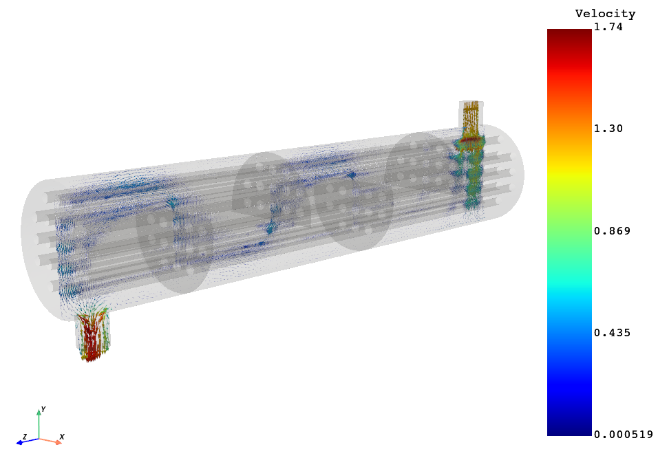

Note
Go to the end to download the full example code
3D field ROM example with CFD mesh based visualization#
This example shows how PyTwin can be used to load and evaluate a twin model, and visualize the ROM results on a CFD mesh. Once the twin model is evaluated, PyDPF is used to read in the CFD mesh on which the ROM results will be projected. PyVista is then used to perform the 3D visualization with different options. For more information, see the PyDPF documentation and PyVista documentation.
{kind=link}
# sphinx_gallery_thumbnail_path = '_static/TBROM_CFD_mesh_projection.png'
Note
This example uses PyDPF which requires a DPF server installation (version 2024 R1-pre0 or higher) as a first step. More information on how to download and install DPF server is available here : https://dpf.docs.pyansys.com/version/stable/getting_started/index.html#install-dpf-server
To be able to use the functionalities to project an output field on a mesh, you must have a twin with one or more TBROMs. The output mode coefficients for the TBROMs must be enabled when exporting the TBROMs and connected to twin outputs following these conventions:
If there are multiple TBROMs in the twin, the format for the name of the twin output must be
outField_mode_{mode_index}_{tbrom_name}.If there is a single TBROM in the twin, the format for the name of the twin output must be
outField_mode_{mode_index}.

Note
To be able to use the functionalities to project an output field on a mesh with interpolation, you need to have a Twin with 1 or more TBROM, for which its geometry is embedded when exporting the TBROMs to Twin Builder

Note
To be able to use the functionalities to project an output field on a given named selection, you need to have a Twin with 1 or more TBROM, for which Named Selections are defined.
{kind=link}
Perform required imports#
Perform required imports, which include downloading and importing the input files.
Define ROM inputs#
Define the ROM inputs.
rom_inputs = {"Mass_Flow_HX": 75.0, "Tube_temperature": 1115.0, "shell_inlet_temp": 300.0}
Load the twin runtime and generate temperature results#
Load the twin runtime, initialize and extract ROM related information.
print("Initializing the Twin")
twin_model = TwinModel(twin_file)
twin_model.initialize_evaluation(inputs=rom_inputs)
rom_name = twin_model.tbrom_names[0]
named_selections = twin_model.get_named_selections(rom_name)
Initializing the Twin
Extract the CFD mesh information for projection#
Load the Fluent cas file through PyDPF and extract all the zones associated to the ROM’s named selections
print("Reading the CFD mesh")
ds = dpf.DataSources()
ds.set_result_file_path(cfd_file, "cas")
streams = dpf.operators.metadata.streams_provider(data_sources=ds)
model = dpf.Model(data_sources=ds)
minfo = model.metadata.mesh_info
zone_names_vec = minfo.get_property("zone_names")
zone_ids = zone_names_vec.scoping.ids
zone_names = list(zone_names_vec.data)
ids = [zone_ids[zone_names.index(name)] for name in named_selections if name in zone_names]
# extracting the individual grid associated to each named selection and merging all of them in 1 single grid
whole_mesh = dpf.operators.mesh.meshes_provider(streams_container=streams, region_scoping=ids).eval()
target_mesh = whole_mesh[-1].grid
target_mesh = target_mesh.merge([whole_mesh[i].grid for i in range(0, len(ids) - 1)])
Reading the CFD mesh
Project the TBROM field onto the targeted mesh#
The projection is performed without interpolation. In that case, it is assumed that the TBROM points have the same order as the CFD cells to which they are associated to. This is ensured if the same CFD mesh is used for the projection as the one used to generate the training data for this ROM.
print("Projecting the results on target mesh")
rom_on_cfd_mesh = twin_model.project_tbrom_on_mesh(rom_name, target_mesh, False)
Projecting the results on target mesh
Post processing and field visualization using PyVista (part 1)#
Creation of the scene and results to display (e.g. velocity vectors field on cross section on top of geometry)
print("Post processing (part 1)")
plotter = pv.Plotter()
plotter.set_background("white")
plotter.add_axes()
full_mesh = rom_on_cfd_mesh
plotter.add_mesh(full_mesh, color="grey", opacity=0.1)
slice_data = rom_on_cfd_mesh.slice(normal=[1, 0, 0])
glyph_data = slice_data.glyph(factor=0.1)
plotter.add_mesh(glyph_data, scalar_bar_args={"title": twin_model.get_field_output_name(rom_name), "color": "black"})
plotter.camera_position = [
(7.50710902970841, 1.958889533928373, 10.523076657664214),
(0.07444126006233703, -0.2615789288414023, 3.0867204291179635),
(-0.14373227292696578, 0.9784129497303378, -0.1484895064279887),
]
plotter.show()
Post processing (part 1)
Post processing and field visualization using PyVista (part 2)#
Creation of the scene and results to display (e.g. velocity magnitude on a given boundary on top of geometry)
print("Post processing (part 2)")
namedselection = "outlet"
nsid = [zone_ids[zone_names.index(namedselection)]]
whole_mesh = dpf.operators.mesh.meshes_provider(streams_container=streams, region_scoping=nsid).eval()
target_mesh = whole_mesh[0].grid
# The projection is performed with interpolation (point cloud data interpolated onto target mesh)
rom_on_outlet_mesh = twin_model.project_tbrom_on_mesh(rom_name, target_mesh, True, namedselection)
rom_inputs = {"Mass_Flow_HX": 85.0, "Tube_temperature": 1200.0, "shell_inlet_temp": 320.0}
twin_model.initialize_evaluation(inputs=rom_inputs)
rom_on_outlet_mesh = rom_on_outlet_mesh.cell_data_to_point_data() # averaging cells data to points data
plotter = pv.Plotter()
plotter.set_background("white")
plotter.add_axes()
plotter.add_mesh(full_mesh, color="grey", opacity=0.25)
plotter.add_mesh(rom_on_outlet_mesh, scalar_bar_args={"color": "black"})
plotter.camera_position = [
(3.662661397689252, -4.19966326640998, 2.017884510665788),
(0.922469325699475, -1.2872255352003648, 4.932569683791402),
(-0.3767521888598233, -0.8079293655117974, 0.4531091794844114),
]
plotter.show()
Post processing (part 2)
0%| [00:00<?]
Interpolating: 0%| [00:00<?]
Interpolating: 100%|██████████[00:00<?]
Interpolating: 100%|██████████[00:00<?]
{kind=link}
Total running time of the script: (1 minutes 33.040 seconds)